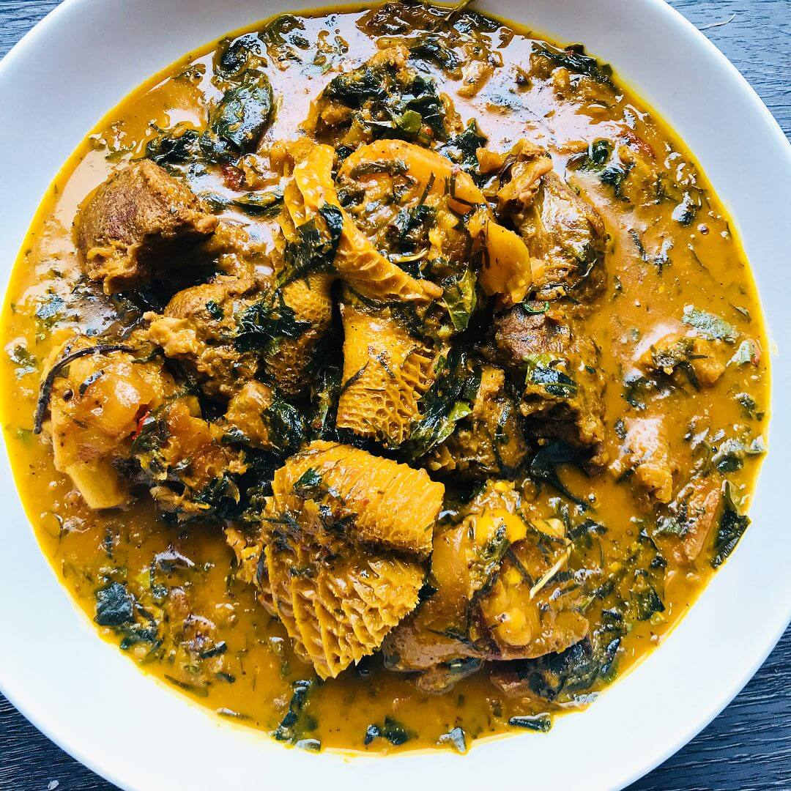

Onugbu

Onugbu is an Igbo delicacy dating more than five hundred years.
its main ingredience is the Palm fruit.
Fish and assorted meat are normally used to ganish it
Ingredients
- Palm Oil
- Smoked fish
- Assorted meat
- Bitter leaves
- Onions
- Pepper
- Salt
Steps
- Boil palm oil
- Add onions, crayfish and Pepper
- Parboil the fish and meat
- Pour both on the same pot and cook for 30 minutes
- add ingridients to taste
- wash and cut bitter leaves to small sizes
- add the cut leaves and boil for 2 minutes
- Food is Ready